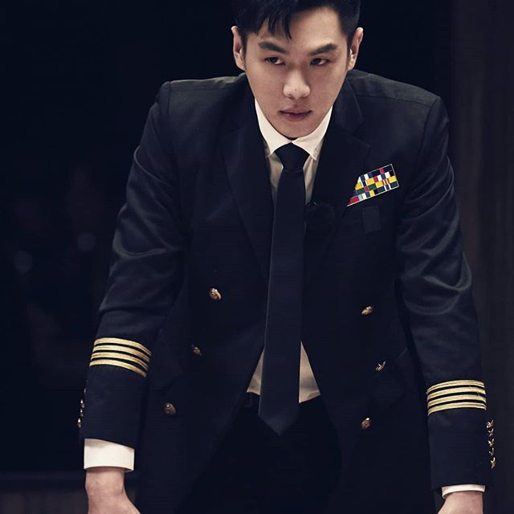
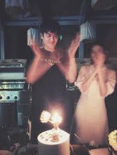

Our Story

Awal mula saya ketemu dengan Robert adalah di saat kami di akhir tahun pertama penguruan tinggi di Georgia. Saat itu kami berteman dan bergaul dengan baik. Namun, setelah lulus kami tidak lagi melihat satu sama lain.
Siapa sangka keseharianku yang kuhabiskan untuk melakukan apa yang kusukai ternyata membawaku untuk menemukan belahan jiwa ku. Pada suatu hari saya diundang oleh teman saya untuk menghadiri acara meet upsesama artist. Disanalah saya bertemu lagi dengan Robert
Kami sering mendiskusikan mengenai hobi kami, masa kuliah di Georgia, karir kami, dll. Seiring dengan berjalannya waktu kami pun mulai mempunyai perasaan satu sama lain. Pada tanggal 14 Feb 2016 kami pergi ke Sweety Park jalan-jalan, dan Yah ! kami pun jadian tepat pada hari itu juga.
R : Ingat pernah satu kali, saya ditugaskan ke New York dan saya harus menjalin LDR dengan dengan Stephanie, saat itu saya sangatlah sedih... dan tepat pada ulang tahun saya, Stephanie sangatlah dinging pada saya. Saya sangat sedih dan saat saya masuk ke dalam kos saya. Saya hanya bisa diam.
Apa yang terjadi ? Yah ! ternyata Stephanie sedang di dalam kos saya menyiapkan barang barang untuk merayakan ulang tahun saya.
Itu merupakan hari yang tidak terlupakan. Bayangkan saja, ia harus dari Beijing terbang ke New York hanya untuk memberikan saya sebuah kejutan ? Gila bukan gadis ini.
S: Di ulang tahun ku yang ke 23, saat itulah menjadi salah satu momen yang berhaga bagi kami. Robert melamarku di hadapan para tamu undangan berseta dengan sanak keluarga. Aku menangis bahagia dan menerimanya. Setelah itu kami pun berdansa bagaikan tuan putri dan pangeran dalam cerita Cinderella